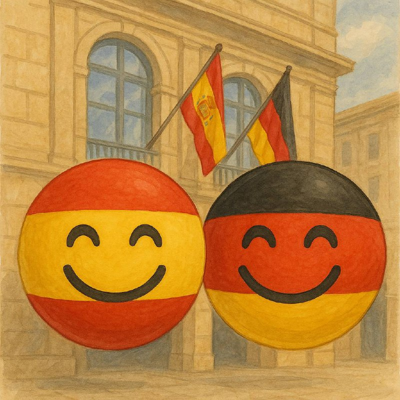

Идея городов-побратимов (или hermanamientos по-испански, twin towns / sister cities по-английски) появилась после Второй мировой войны — и у неё была очень конкретная цель: не допустить повторения войны, создавая прямые связи между обычными людьми разных стран.
Между городами-побратимами существуют организация фестивалей, выставок, концертов, образовательных программ, где жители узнают традиции друг друга. Совместные Экономические и технологические миссии и проекты.
Если города из разных стран дружат, обмениваются людьми, культурой, опытом, то снижается риск вражды и недоверия между народами.
Иногда города становятся побратимами, чтобы почтить общую историю или память о совместных событиях (например, помощь во время войны или катастрофы).
У Овьедо тоже есть город-побратим. Вам нужно найти символ этой дружбы и сфотографироваться на его фоне. 